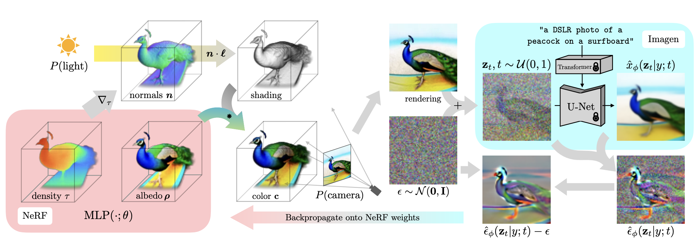
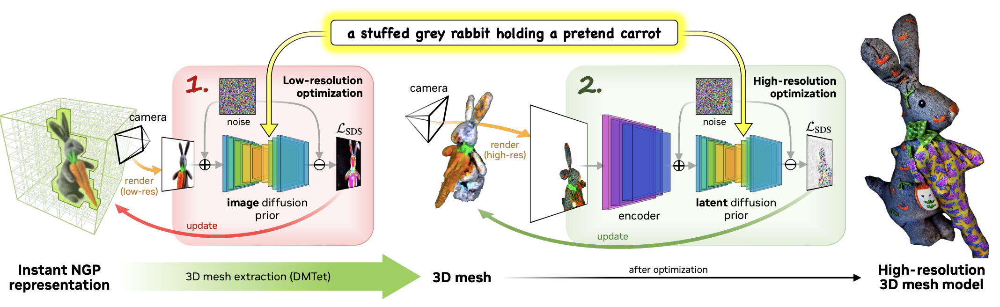
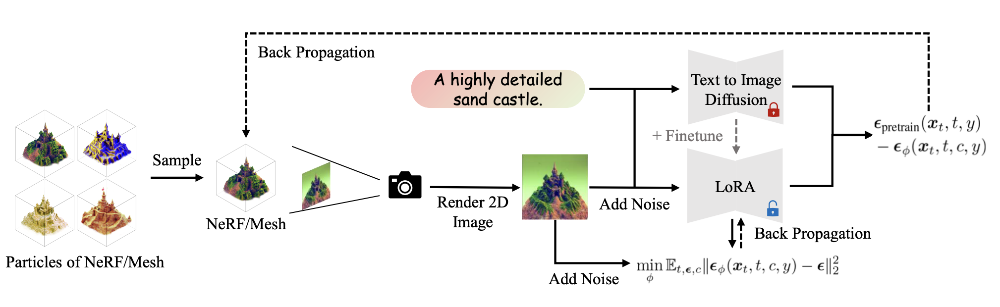

This project is my main work in metaapp, which is inspired by the successful work of the combination of nerf and diffusion model. It has two part, one is text to 3d generation, the other is image to 3d generation. Thanks to the great work, threestudio. I did most of my work based on this repository.
Diffusion models exhibit excellent performance (high fidelity, diversity, and controllability) in text-to-image generation tasks. However, using diffusion models for 3D generation tasks is challenging, requiring a large amount of annotated 3D data and effective denoising of 3D models.
GANs can achieve controllable 3D generation models, performing well in face model generation, but they do not support 3D model generation guided by arbitrary text.
Dreamfield utilizes the embeddings of images and text from CLIP model to further train Nerf. This work demonstrates that pre-trained text-image models can be used to guide the generation of 3D models. However, the generation results of Dreamfield lack realism and accuracy.
Similar to Dreamfield, utilize a high-performing text-image model to guide 3D generation. However, instead of using the CLIP model, introduce a diffusion model to construct the loss function for optimizing the training of Nerf.
Propose Score Distillation Sampling, which combines the diffusion model with Nerf. The loss function is based on probability density distillation, minimizing the Kullback–Leibler divergence between the Gaussian distribution based on the forward diffusion process and the score function of the pre-trained diffusion model.

Model seeking nature with poor diversity, over-smoothing, and over-saturation. Different seeds result in nearly identical 3D models.
Experiments reveal a tendency towards three-dimensional axis-symmetric models. This is likely due to the prevalence of standard object viewpoints in text-to-image pre-trained models, causing Nerf to generate standard viewpoints for each angle. A typical case observed in experiments is the generation of a food fork.
Dreamfusion has long training times. The base model of Dreamfusion adopts mipnerf360, and the fully MLP structure design of Nerf leads to long training times.
Dreamfusion produces low-quality results. The use of lower-resolution diffusion models to optimize Nerf results in lower reconstruction quality.
Employ two different 3D models and two different diffusion models to guide 3D scene generation. Design a Coarse-to-fine model, where the Coarse stage is similar to Dreamfusion, using a diffusion model to optimize Nerf. Following the Coarse model, add a Fine model, which optimizes the model using an explicit mesh 3D structure.

No need for any 3D data. SDS has made significant progress in the text-to-3D task, but the generated 3D models are overly smooth, lack detail, and have poor diversity.
Introduced Variational Score Distillation, which models the corresponding 3D scene for a given text prompt as a distribution, rather than a point (as in SDS).
For modeling the distribution of 3D scenes, particles are used to represent 3D models, and a gradient update method based on Wasserstein gradient flow is proposed to optimize particle parameters.
Systematically analyzed factors related to the pre-training process: 512*512 high-resolution rendering, annealing distillation time strategy, scene initialization.
Capable of achieving 360-degree modeling of scenes.

Debiasing Scores and Prompts of 2D Diffusion for Robust Text-to-3D Generation
Re-imagine the Negative Prompt Algorithm: Transform 2D Diffusion into 3D, alleviate Janus problem and BeyondIn the gaming industry, the image-to-3D conversion method is preferred. This is because it allows the direct utilization of artwork, typically 2D drawings depicting characters, scenes, or objects, as input for AI models. Presently, the quality of 3D assets generated by AI falls significantly short of manual creation. However, it serves as a valuable tool for swiftly visualizing the 3D version of the original 2D drawing, facilitating rapid adjustments to design details by artists.
In the realm of 3D generation research, two primary directions emerge. One involves distilling knowledge from expansive vision-language models, which presents two key challenges: the Janus problem and the speed of generating individual models. The emphasis of this direction lies in algorithmic advancements. The other approach entails training models based on 3D datasets, considered the optimal method in theory. However, the availability and quality of 3d datasets are limited. With datasets volumes comparable to those in vision-language model work, the potential for creating generalized and high-quality 3D large models will be possible.